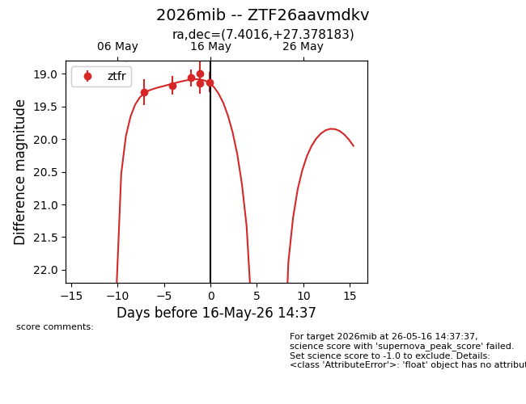
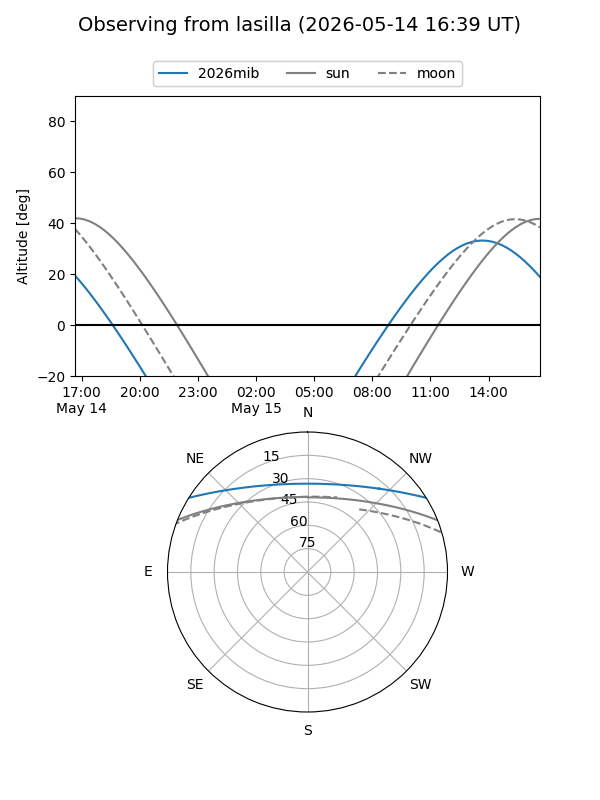
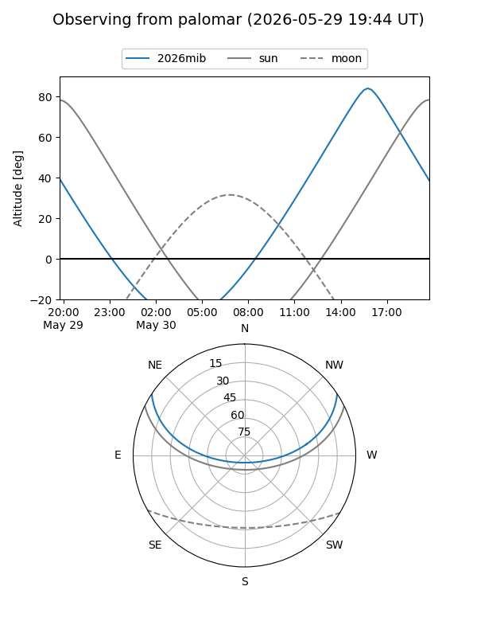
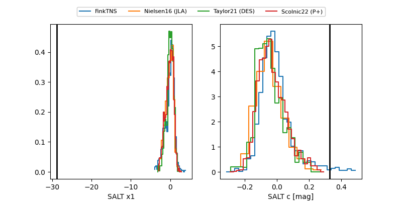

2026mib
Target 2026mib at 2026-05-16 14:39
Aliases and brokers:
FINK: link
Lasair: link
ALeRCE: link
TNS: link
YSE: link
alt names
ZTF26aavmdkv (ztf,fink_ztf)
2026mib (tns,yse)
Coordinates:
equatorial (ra, dec) = 7.4016,+27.37818
equatorial (HMS+DMS) = 00:29:36.38,+27:22:41.46
galactic (l, b) = (116.9962,-35.24182)
Flags:
Photometry:
last ztfr=19.13
6 ztfr detections
Lightcurve

Visibility


Additional plots
